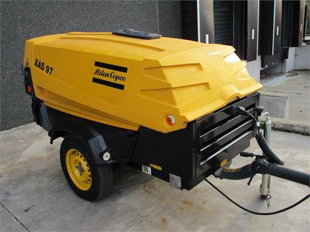

Аренда передвижных дизельных компрессоров
| Наименование | Характеристики | Период аренды | Стоимость аренды без НДС | ||||||||||||||||||||||||||||||||||||||||||||||||||||||||||||||||||||||||||||||||||||||||||||||||
|---|---|---|---|---|---|---|---|---|---|---|---|---|---|---|---|---|---|---|---|---|---|---|---|---|---|---|---|---|---|---|---|---|---|---|---|---|---|---|---|---|---|---|---|---|---|---|---|---|---|---|---|---|---|---|---|---|---|---|---|---|---|---|---|---|---|---|---|---|---|---|---|---|---|---|---|---|---|---|---|---|---|---|---|---|---|---|---|---|---|---|---|---|---|---|---|---|---|---|---|
|
Atlas Copco XAS77
|
Тип: прицепной Производительность: 4,2м3/мин Давление - 7,0 бар Двигатель - дизель, 31,5kW Вес - 1060кг |
От 3 рабочих дней | От 75 руб./сутки | ||||||||||||||||||||||||||||||||||||||||||||||||||||||||||||||||||||||||||||||||||||||||||||||||
|

Atlas Copco XAS97
|
Тип: прицепной Производительность: 5,3м3/мин Давление - 7,0 бар Двигатель - дизель, 36kW Вес - 1060кг |
От 3 рабочих дней | От 90 руб./сутки | ||||||||||||||||||||||||||||||||||||||||||||||||||||||||||||||||||||||||||||||||||||||||||||||||
|
МИРОСТАТ MR-10/10
|
Тип: стационарный Производительность: 10,0м3/мин Давление - 10,0 бар Двигатель - дизель, 88kW Вес - 1650кг |
От 5 рабочих дней | От 120 руб./сутки | ||||||||||||||||||||||||||||||||||||||||||||||||||||||||||||||||||||||||||||||||||||||||||||||||
- Предлагаем в аренду передвижные дизельные компрессоры c производительностью 4,2 - 10,0 м3/мин и рабочим давлением до 10атм.
- Данные компрессоры предназначены для обеспечения сжатым воздухом всевозможных пневмосистем и инструмента, продувки и проверки трубопроводов (магистралей), питания пескоструйного оборудования, а также подачи и транпортировки различных сыпучих материалов.
- Все предлагаемые нами компрессоры находятся в отличном состоянии, очень надежные, компактные, экономичные, удобные и неприхотливые в работе. Легко транспортируются при помощи легкового автомобиля.
- По желанию клиента организуем доставку компрессора в любую точку Беларуси.
- В договоре аренды итоговая цена формируется с НДС (+20% к указанным ценам).
- Цены указаны ориентировочно (зависят от типа компрессора и срока аренды), подробная информация по телефону.
- Возможны скидки при аренде на длительный срок.
- Безналичный расчет.
- Аренда по всей территории Республики Беларусь.
- При желании вы можете купить в собственность любой понравившийся вам компрессор.
Телефоны специалистов: 029-372-20-13, 029-188-92-88